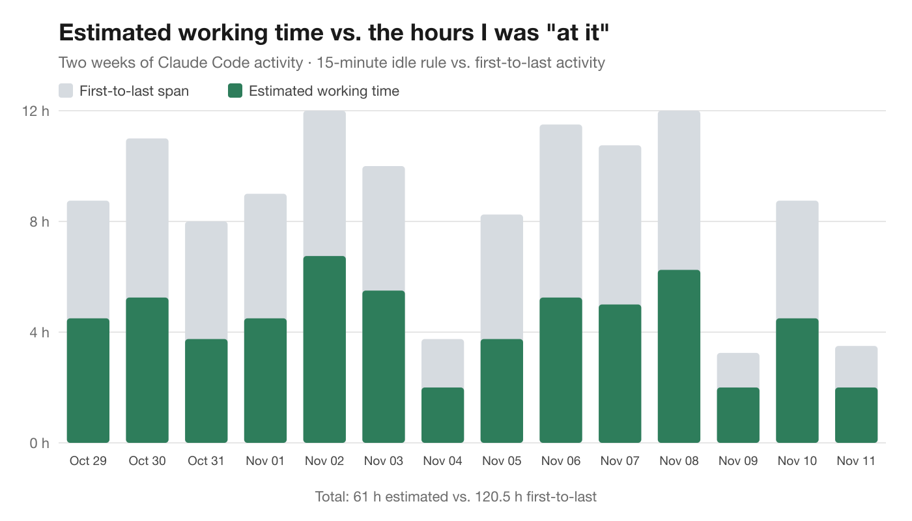
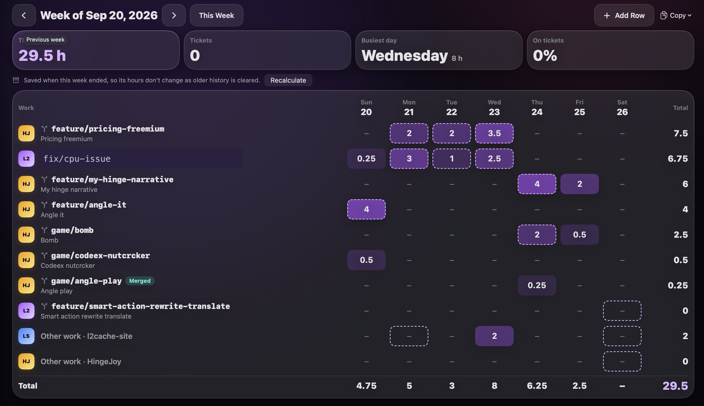

Your Mac already logged your week: in branch names, commits and agent prompts. Here's how to turn that into hours you can defend.
Key findings
It's 4:40 on a Friday. The timesheet is due at five. The client wants hours per ticket, per day, and you're staring at Tuesday.
Tuesday. You know you fixed the login bug, because you remember the relief. You know there was a call about the export. Was the call before or after lunch? Did the bug take two hours or five? You open your calendar, then your Git log, then Slack, and slowly reconstruct a day you lived through four days ago. Then you round everything to the nearest hour, add a bit for "investigation", and hope nobody asks.
If you're a freelance developer or contractor who bills by the hour, you know this ritual. It's twenty minutes of unpaid archaeology every week, and the result is a guess wearing a spreadsheet costume.
The odd thing is that the evidence was there all along. Nobody was reading it.
Think about what a developer's Mac records in a normal day, without anyone asking it to:
fix/ABC-142-login-timeout says which ticket you were on, and Git's reflog says when you switched to it.npm test, every git push, timestamped.Put those on one timeline and Tuesday stops being a mystery. The question is how to turn a pile of timestamps into billable hours, without a time tracking app and without lying in either direction.
The first thing I tried was the obvious one: take the first and last activity of each day and call the gap "time worked". Start at 9:10, last commit at 6:40: nine and a half hours.
It isn't, of course. A span like that includes lunch, a dentist appointment, forty minutes reading about a framework you'll never use, and the stretch where your coding agent ran a long refactor while you made coffee.
So I measured it. I took two weeks of my own Claude Code activity and estimated my working time with the rules I'll describe below, then compared it with the first-to-last span for each day:

61 hours estimated, against 120.5 hours of first-to-last span. Most days, the span was about double. If I'd billed the span, I'd have been charging for my lunch breaks. If I'd billed from memory, I honestly don't know which way I'd have been off, and that's the problem.
(Two caveats, so you can read that chart fairly. It only uses Claude Code activity, so terminal work outside an agent and Git activity aren't in it. And thinking, reading and meetings leave no trace on a Mac at all. The estimate is a floor for keyboard time, not a full picture of a working day.)
After a lot of back and forth, I ended up with four rules. They're simple enough to explain to a client, which matters more than being clever.
| Rule | Value | Why |
|---|---|---|
| Each point of activity owns the time until the next | Up to 15 minutes | Covers reading a diff or thinking through a bug |
| A longer gap is idle | Over 15 minutes: the point gets 5 minutes | Keeps lunch and meetings off the timesheet |
| Agent work counts only when you're there | Within 15 minutes of your own input | An agent running alone isn't your time (724 events left out in my data) |
| Round and label it | Nearest quarter hour, marked as an estimate | Honest about the uncertainty; corrections stay yours |
If I typed a prompt at 10:00 and ran the tests at 10:07, the prompt owns those seven minutes. Activity is a series of points, and the time between them belongs to the point before.
If the next point is more than 15 minutes away, I wasn't working in between, or at least I can't show that I was. The point before the gap gets a flat 5 minutes instead of the whole gap. That one rule is what keeps lunch, meetings and long stares out the window off the timesheet.
Why 15 minutes? It's long enough to cover reading a diff or thinking through a bug, and short enough that a coffee break doesn't count. You could argue for 10 or 20. What matters is picking one rule and applying it the same way every day.
This one matters a lot once you work with coding agents. An agent can run for an hour on its own while you're at lunch. Its replies and commands are all timestamped, and a naive tracker would happily bill that hour.
So agent activity only counts if it's within 15 minutes of something you did: a prompt you typed, a command you ran. An agent working alone for two hours doesn't fill your timesheet. In my two weeks of data, 724 agent events were left out for exactly that reason.
Minutes look precise, and they aren't. Rounding to the nearest quarter hour is honest about the uncertainty, and it's what most clients expect anyway. Every number should say where it came from: estimated from your activity until you change it, corrected by you after.
That last part is the most important design decision. A timesheet built from activity is a first draft, not a stopwatch. You know about the 30-minute call that left no trace. The tool should make it easy to add that row and fix a cell, and it should never overwrite your correction when it recalculates.
Hours per day is half the job. Clients usually want hours per ticket, which raises the next question: which ticket was each point for?
Most of the time the answer is sitting in the evidence:
fix/ABC-142-login-timeout is ABC-142.git push between two prompts on ABC-142 counts for ABC-142.Work on main, or on a branch that's been alive for more than 30 days, goes to the project rather than to a ticket, because a long-lived branch isn't a work item.
One more lesson: don't hard-code ticket formats. Teams use ABC-123, INC0012345, #1234 and stranger things. It works better to look for IDs that keep coming back in your own branches and commits, and ask you to confirm which ones are real.
The day a client questions an invoice is the day a memory-based timesheet falls apart. "I think it was about five hours" isn't an answer anyone wants to give.
An activity-based timesheet gives you a better one. Every hour traces back to timestamps: the commits on that ticket's branch, the prompts in that session, the test runs in between. You can open a day and show what happened, in order. You can explain the rule in one sentence: gaps over 15 minutes don't count. And you can point at the cells you corrected by hand and say why.
Two things make that conversation go well:
It also cuts the other way. In my data, the estimate was lower than the span every day. If anything, activity-based hours protect the client from paying for your lunch, and that's an easy thing to say out loud.
Once your activity is on one timeline, the daily standup is almost free. "What did you do yesterday?" is your commits, the branches you started and the merges you landed. "What's next?" is the open loops: failing tests, unpushed commits, a branch waiting for review. "Blockers" is whatever's still red.
A plain template does this well with no AI at all:
*Yesterday*
• ABC-142: handle expired tokens; retry on 401
• started ABC-150-export-csv
*Today*
• Finish ABC-150 and open the PR
*Blockers*
• NoneIf you do let an AI tidy it up, give it the facts and nothing else, and tell it plainly not to invent work, numbers, people or tickets. An AI that guesses what you did yesterday is worse than no standup at all.
You can check the gap between your span and your real working time right now. This script reads your Claude Code transcripts (timestamps and folder names only, never message text) and applies the rules above: the 15-minute idle gap, the 5-minute credit, and the rule that agent activity only counts near something you typed.
"""Estimate your hours per project per day from Claude Code transcripts.
Uses the same rules as L2Cache's timesheet: each moment of activity owns the time
until the next one; a gap over 15 minutes is idle and earns 5 minutes; agent
activity counts only within 15 minutes of something you typed. Reads timestamps
and folder names only, never message text.
"""
import functools
import glob
import json
import os
import sys
from collections import defaultdict
from datetime import datetime, timedelta
IDLE_GAP = 15 * 60
CREDIT = 5 * 60
DAYS = 14
def is_your_prompt(row):
# Compaction summaries are written as user messages but nobody typed them.
if row.get("type") != "user" or row.get("isMeta") or row.get("isCompactSummary"):
return False
content = (row.get("message") or {}).get("content")
if isinstance(content, str):
return True
return isinstance(content, list) and not any(
isinstance(b, dict) and b.get("type") == "tool_result" for b in content)
@functools.lru_cache(maxsize=None)
def project_name(folder):
"""The repository a folder belongs to (its nearest parent with a .git), like L2Cache's projects."""
path = folder
while path and path != os.path.dirname(path):
if os.path.exists(os.path.join(path, ".git")):
return os.path.basename(path)
path = os.path.dirname(path)
return os.path.basename(folder) or "?"
def points():
since = datetime.now().astimezone() - timedelta(days=DAYS)
for path in glob.glob(os.path.expanduser("~/.claude/projects/*/*.jsonl")):
for line in open(path):
try:
row = json.loads(line)
when = datetime.fromisoformat(row["timestamp"].replace("Z", "+00:00")).astimezone()
except (json.JSONDecodeError, KeyError, ValueError):
continue
if when < since or row.get("type") not in ("user", "assistant"):
continue
project = project_name(row.get("cwd") or "")
yield when, project, is_your_prompt(row)
def main():
pts = sorted(points())
anchors = [w for w, _, you in pts if you]
present = []
j = 0
for when, project, you in pts:
while j + 1 < len(anchors) and anchors[j + 1] <= when:
j += 1
near = any(0 <= k < len(anchors) and abs((anchors[k] - when).total_seconds()) <= IDLE_GAP
for k in (j, j + 1))
if you or near:
present.append((when, project))
hours = defaultdict(float)
for i, (when, project) in enumerate(present):
gap = (present[i + 1][0] - when).total_seconds() if i + 1 < len(present) else IDLE_GAP + 1
hours[(when.date(), project)] += gap if gap <= IDLE_GAP else CREDIT
alone = sum(1 for _, _, you in pts) - len(present)
# First to last activity each day: the "I was at it from 9 to 6" number.
first, last = {}, {}
for when, _ in present:
first.setdefault(when.date(), when)
last[when.date()] = when
days = sorted({d for d, _ in hours})
projects = sorted({p for _, p in hours})
names = {p: (f"Project {chr(65 + i)}" if "--mask" in sys.argv else p) for i, p in enumerate(projects)}
q = lambda s: round(s / 900) / 4
print(f"ESTIMATED HOURS, LAST {DAYS} DAYS (from Claude Code activity)")
print(f"{'day':<12}" + "".join(f"{names[p][:12]:>13}" for p in projects) + f"{'total':>9}{'span':>9}")
for d in days:
row = [q(hours.get((d, p), 0)) for p in projects]
print(f"{d:%a %b %d} " + "".join(f"{h:>13.2f}" for h in row) + f"{sum(row):>9.2f}{q((last[d] - first[d]).total_seconds()):>9.2f}")
total = sum(q(hours.get((d, p), 0)) for d in days for p in projects)
span = sum(q((last[d] - first[d]).total_seconds()) for d in days)
print(f"\nEstimated time: {total:.2f} h over {len(days)} days. First-to-last span: {span:.2f} h.")
print(f"Agent activity left out because you weren't there (15+ min from your last input): {alone:,} events.")
if __name__ == "__main__":
main()Save it as hours_check.py and run python3 hours_check.py. Add --mask to replace project names with "Project A, B, C" if you want to share the output. Here's mine:
ESTIMATED HOURS, LAST 14 DAYS (from Claude Code activity)
day Project A Project B Project C total span
Thu Oct 29 4.50 0.00 0.00 4.50 8.75
Fri Oct 30 5.25 0.00 0.00 5.25 11.00
Sat Oct 31 3.75 0.00 0.00 3.75 8.00
Sun Nov 01 4.50 0.00 0.00 4.50 9.00
Mon Nov 02 6.75 0.00 0.00 6.75 12.00
Tue Nov 03 5.50 0.00 0.00 5.50 10.00
Wed Nov 04 2.00 0.00 0.00 2.00 3.75
Thu Nov 05 3.75 0.00 0.00 3.75 8.25
Fri Nov 06 3.75 1.50 0.00 5.25 11.50
Sat Nov 07 0.00 5.00 0.00 5.00 10.75
Sun Nov 08 5.50 0.75 0.00 6.25 12.00
Mon Nov 09 2.00 0.00 0.00 2.00 3.25
Tue Nov 10 4.50 0.00 0.00 4.50 8.75
Wed Nov 11 1.75 0.25 0.00 2.00 3.50
Estimated time: 61.00 h over 14 days. First-to-last span: 120.50 h.
Agent activity left out because you weren't there (15+ min from your last input): 724 events.Today's row is a partial day. The rest is a fair picture of two weeks: never more than about seven hours of activity in a day, even on days with twelve hours between the first and last of it.
I built these rules into L2Cache, the Mac app I make. Its Worklog learns your ticket formats from your own branches and commits (and asks you to confirm them), estimates each day from Git, agent sessions and terminal commands, and lets you correct any cell or add a row for a call. Copy as Table pastes straight into a client's spreadsheet, Export CSV covers the rest, and the standup is one click away on the Today page. Everything stays on your Mac; it doesn't connect to Jira or anything else.

But the rules matter more than the tool. Even if you keep filling in timesheets by hand, run the script once. Seeing your real working hours next to the hours you thought you worked changes how you estimate, how you quote, and how you feel about that Friday deadline.
Your timesheet shouldn't come from memory. It should come from evidence you already have, with an honest rule for the gaps and room for you to correct it.
Partly. Commits give timestamps and often ticket IDs, but they're sparse. Adding agent prompts, branch switches and terminal commands fills the gaps, and an idle rule (gaps over 15 minutes don't count) keeps breaks out.
Estimate them from activity that's already recorded, apply one stated rule for gaps, round to the quarter hour, and correct the estimate by hand for calls and other work that leaves no trace.
No. In my two weeks it was about double the activity-based estimate (120.5 h against 61 h), because it includes lunch, meetings and time an agent ran on its own.
State the method in one sentence (gaps over 15 minutes don't count), show the timestamps behind any day they ask about, and keep your manual corrections visible.
For the full details of how the estimate works, including ticket format learning, linking branches and exports: Your hours, already counted: a timesheet and standup from your coding activity. And for the morning side of the same data: where you left off, every morning.
L2Cache estimates your week from local activity, and you fix what it got wrong.
Download L2Cache for Mac